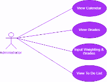
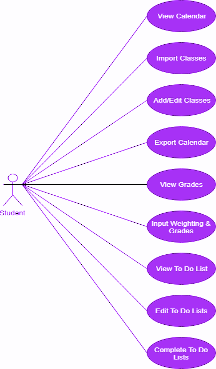

Final Submission
Hawk Aid
The purpose of this document is to outline the requirements and functionalities of the app Hawk Aid, a group project developed by the project team for the Fall 2020 CP470 class. Our main goal is to provide a minimalist course-note-taking application that provides all necessities in a very minimal fashion. Due to the pandemic occurring, a lot of teaching has been happening over the internet. We realized it is difficult for students to stay organized throughout a semester due to the pandemic and we also realized the current note taking apps in the market don’t really focus on students' needs; that’s where Hawk Aid comes in.
It was created for the project team to reference during all development phases, as well as the Client, Abdul-Rahman Mawlood-Yunis.
The scope of the mobile app “Hawk Aid” is to help the students make notes for specific courses and add all their courses along with the course specific notes in one app. We aim to develop an app which can help students create notes all in just one app and refer back to them whenever they want. People of all ages can use Hawk Aid to save their important notes.
Hawk Aid will provide a minimalistic view for taking course-notes, organizing notes, preparing for tests/exams while also reminding you for your next up-coming deadline to avoid any penalties. Essentially, Hawk Aid is a minimalistic course-based notes app that entirely focuses on course-related note-taking.
Hawk Aid is designed to aid people that consider themselves as disorganized. This application will keep track of your course notes and send you timely reminders to keep you on track. Students will be able to increase their productivity through the use of this app. They will be able to better organize their notes, maintain due dates and other course work. Hawk Aid will allow students to add courses and maintain an efficient record of their course content. Teachers will also be able to make use of this application to keep their course content organized.
We as students find it difficult to keep notes for every specific course organized and maintain our deadlines. There was a need for an android app that can keep an organized record of all of our course content at one place to be able to refer back to as well as remind us for any upcoming deadlines.
Also, as stated above, due to the recent pandemic we had a new motive to create an App that will not only change the way you take notes but also to stay productive and ahead of your courses by having your syllabus by your side and having some friendly reminders for any up-coming due dates and deadlines!
Hawk Aid is designed to make students’ lives easier. Students will be able to view all of their course notes and its contents on one device. Hawk Aid will alert students of the upcoming due date to avoid delay in submissions. It will maintain an efficient record of each student, their course work and their reminders.
Hawk Aid is an android app that will be created to help students organise their notes at one place. As shown in the screenshots, it’s an app which allows students to add their courses and start creating / viewing notes intended for that course; it also provides the course related information such as due dates and exam days, etc. Students can add / remove their courses whenever needed and it will also have the stability to remind students to start preparing for any up-coming tests and quizzes (Whether the specific entry is added to the Calendar or not for reminder purposes). Overall, it will be a nice clean and simplistic App intended for students without all the extra notification; simplistically and aesthetically pleasing is what we are aiming for.
Product on release should be able to:
Unique take on student course management via phone
Implementing damage control against accidental user errors (accidental deletion)
Using sharedpreferences to alter some settings
Providing backup/restore feature
Ability to produce crash log in case of app crash so we know where the problem occured
Using recyclerview, highly specialized and complex form of list display
Able to take pictures of notes & store in app
Notes provide utility to add special chars like TAB, bullet points on the go
Highlight features in notes where highlighted things in notes pertaining to each subject will be stored in a special file, sort of like more concentrated notes
Main Target: High School/College/University going students
Age Group: 6+ (students)
Gender: Gender will not play a role in deciding users for the app.
Language: English / Hindi
Education-Level: Application will be available to users of any education level. It is helpful for students that make a lot of notes while studying.
Physical Limitations: Anybody that has access to an android phone will be able to use it.
Prior Knowledge: Watching the tutorial on how to use the app to add notes, highlight text, change font size etc..
Frequency of Use: Users can use the Hawk Aid app daily to work on their notes for classes and refer back to them during exam times.
Assuming the user has stable internet connection
Assuming the user has storage available on their device to record data
** All activities can by default be called by child activity onDestroy() & onBackPressed().
MainActivity: Shows list of added courses.
Called by:Application launch
Calls : AddCourseActivity, Application launch
AddCourseActivity: prompts to add a course.
Called by: MainActivity
Calls: FileUtilities
ViewCourseActivity: Shows specific course options.
Called by: MainActivity
AddNoteActivity: Prompts to add a note to a specific course.
Called by: ViewNotesActivity
Calls: FileUtilities
ViewNotesActivity: Shows a list of notes currently in a specific course folder.
Called by: ViewCourseActivity
Calls: ViewNoteActivity
ViewInfoActivity: Shows course info syllabus pointers, general due dates, miscellaneous notes, etc for a specific course. allows editing of certain info.
Called by: ViewCourseActivity
Calls: FileUtilities
ViewNoteActivity: shows a specific note and allows you to edit the note.
Called by: ViewNotesActivity
Calls: FileUtilities
SettingsActivity: shows settings options, able to change some settings.
Called by: MainActivity
Calls: HelpPageActivity / CrashReportsActivity
HelpPageActivity: shows instructions to the front end user.
Called by: SettingsActivity
CrashReportsActivity: shows list of crashes & cause, able to clear all generated logs.
Called by: SettingsActivity
Calls: FileUtilities
FileUtilities: manages file I/O using background task management interface.
Called by: MainActivity / ViewCourseActivity / ViewNoteActivity
App directory structure: Using default getFilesDir() directory
+ Course(s) - directory - each Course is a directory of its own
naming_pattern - "courseCode: courseName"
+ info - file - contains info on course
+ note(s) - file - each note is a file on its own
+ crash_log(s) - file - each crash log is a file on its own
naming_pattern - "new Date().toString()": at time of log creation
Hawk Aid provides several services:
Courses view
Information about the course is added by the user, the data includes course name, course code, course syllabus
Course id and course name is a mandatory field when creating a new course
A course can be deleted in future by the user
Notes
Content of the note is to be written by the user
Users are able to edit/remove any note of their choice
The title of the note is a mandatory field when creating a new note
Notes will keep a record of date and time when created for future reference
Reminders
Reminders are to be created by the user as needed
It will alert users at specified time
Users are required to enter a title/name of the reminder along with date and time upon creation
Backup
Backup will be used by to user to transfer all of their course content in case of phone transfer
Users are expected to create a backup file at their desired location through backup functionality of the app before deletion of any course content
Restore
Restore will be used by to user to retrieve all of their course content in case of phone transfer
Users are expected to already have a backup file ready for recovery
Users will choose the backup file they wish to recover
General
Users are able to create multiple courses, notes and reminders
The information is to be stored and pulled from the realm database, then to be displayed is well organized structure internally
User’s device is expected to have stable internet connection and have plenty internal storage available
Courses/Notes
All the course data including notes will be pulled and loaded initially upon app startup
The courses are to be displayed in a user friendly way
Notes are to be found inside its designated course for an organized layout
Creation of new course and its notes are to be add to the realm database as well
Upon deletion, realm database is to be updated accordingly
Reminder
Reminders are to be loaded during the startup phase of the application
They will be display in the order of their creation
Each reminder is displayed with its creation date and time, title and description
Creation of a new reminder and deletion of a reminder updates the database accordingly
Backup/Restore
Users are expected to manually create a backup file for future reference before removal of any data
Backup file are to be stored internally, size of the file varies, depending on the size of date chosen for backup (courses, notes, reminders)
Users must have sufficient availability of internal storage to support their backup file
Existence of backup file is required in-order to restore data (course, notes, reminder) through Restore functionality
Viewable on android mobile devices
Easy to reuse for different school terms
Customizable to each user’s specific needs (various classes/notes/reminders)
Student Use Case Diagram: Admin Use Case Diagram:


|
Import CourseSyllabus |
|
|
Actors |
Student |
|
Description |
A student may import their current course syllabus into Hawk Aid. This will provide quick and easy access to the import dates, topics and description of the course. |
|
Data |
Student’s course syllabus. |
|
Stimulus |
Entering a link to the course syllabus. |
|
Response |
A series of events is created, it records location to the syllabus and provides quick access to it. |
|
Comments |
Without access to Laurier’s database. Students must provide a link to their course syllabus. |
|
Add/Remove Course |
|
|
Actors |
Student |
|
Description |
A student may alter their courses in Hawk Aid. This includes the ability to add new courses, as well as remove any existing course. |
|
Data |
Course code and Course Title |
|
Stimulus |
Clicking either “+” icon at home page or “Delete Course” button on the course page |
|
Response |
An event is able to be created/deleted |
|
Comments |
Students are able to backup their data before deleting their course(s). |
|
Add/Edit/Remove Notes |
|
|
Actors |
Student |
|
Description |
A student may alter their course notes in Hawk Aid. This includes the ability to add new notes, as well as edit and remove any existing course note. |
|
Data |
Title of the note |
|
Stimulus |
Clicking either the “+” icon found at the course page, or “x” delete button on the note listed, or tapping on the note title to edit its content. |
|
Response |
An series of events are able to create a new note and recording its creation date and time, edit and change the existing note content, and delete a note |
|
Comments |
Students are able to backup their data before deleting their note(s). |
|
Add/Remove Reminders |
|
|
Actors |
Student |
|
Description |
A student may alter their reminders in Hawk Aid. This includes the ability to add new reminders, as well as remove any existing reminders. |
|
Data |
Reminder title, date and time. |
|
Stimulus |
Clicking either “+” icon on the reminders page. |
|
Response |
An event is able to create/delete reminders |
|
Comments |
Students are able to backup their data before deleting their reminders. |
|
Backup/Restore |
|
|
Actors |
Student |
|
Description |
Students are able to backup their course contents and reminders, as well as restore any previously backed up files. |
|
Data |
No data required. |
|
Stimulus |
Clicking either “Backup” or “Restore” button on the settings page. |
|
Response |
An event creates a backup file and/or restore data from a backup up |
|
Comments |
Students are able to backup their data before deleting their course content and reminders. |
Users can easily add courses with just a Tap on the “+” icon on the top right corner. Then they will be prompted to add course code and course title. Once Users have completed creating their courses, they can then open the specified course page through tapping on their desired course. There they will be provided with three options: View Course Information, View Course Notes, and Delete Course.
View Course Information is a place where users are able to upload their course syllabus for easy access. Inorder to upload their course syllabus , users are to first open the View Course Information page through their desired course, then tap the “+” icon to add a link to their course syllabus.
View course notes is a place for users to add and view their notes for the course. Notes in here will contain a timestamp as a reminder of when it had been created. Users in here are able to view their notes by simply selecting the note they wish to view or edit. They also have the option to delete their notes by simply clicking on the red “x” found on the right side of each note.
Delete course button is used to delete the specified course. In order to successfully delete a course, users must briefly tap and hold the delete button. There then they will be prompted with a confirmation popup where users will be asked to type in “DELETE” to proceed.
Users are able to add reminders through the home page. Users can simply tap on the bell icon where they will be taken to a reminders page that contains all of their previous reminders. To set a new reminder, simply tap on the “+” icon on the top right corner of the reminders page. There they will be prompted with a popup requesting details about your reminder.
Users are able to back and restore their course information through the settings. To save a backup, tap on the gear icon found on the top right corner of the home page. There users will be provided with three options: help, backup and restore. Help button contains another “How To Use Guide” that users can refer back to if needed. Back button will prompt the user with a confirmation dialog and then have them choose their desired location to store their backup. Restore button will enable users to choose a backup file from their device and restore their course data.